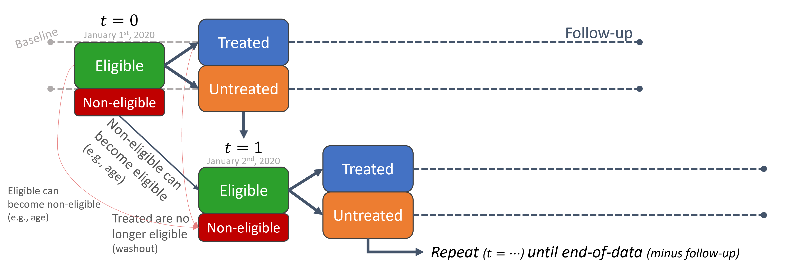
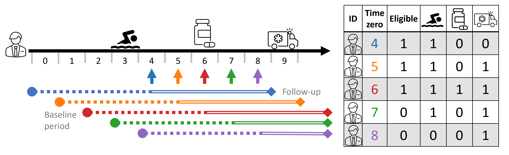
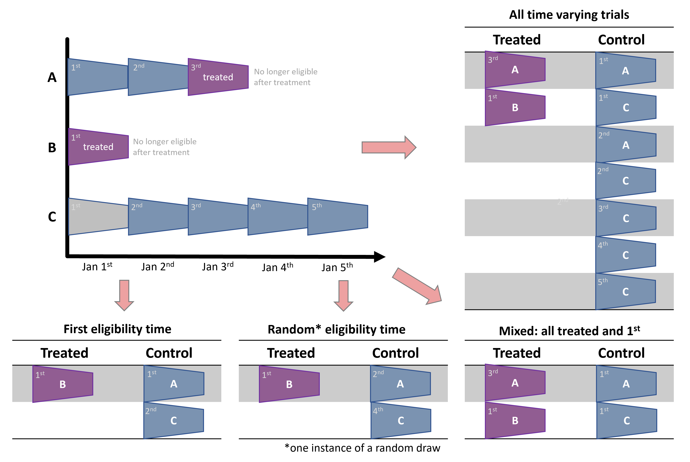
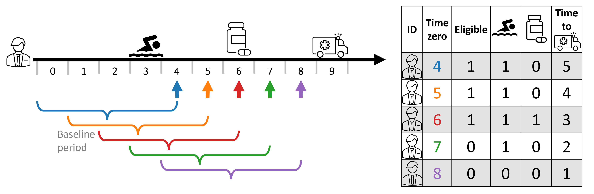

Sequential trial design for causal inference
Aligning time-zero to reduce time-related biases by taking simplest solution possible and awkwardly repeating it until it’s great.
Introduction
I’m not special, so I’ve spent a lot of time addressing confounding bias in causal inference. I even created and still maintain an open-source Python package whose main focus is flexible causal inference modeling (pip install causallib). There’s a place to discuss why confounding bias is the most popular bias, but this blog post is not it. I have a different bias I want to focus on.
There’s actually some compelling evidence (well, at least anecdotal) that confounding bias has less of a biasing effect than what one would expect. One example is Garcı́a-Albéniz, Hsu, and Hernán (2017) examining the effect of colorectal cancer screening on colorectal cancer incidence. It showed the same survival curves for treatment and control units when adjusting and not adjusting for confounding factors. This, in and of itself, is a poor evidence, but the exact same shape of survival curves also appeared in Bretthauer et al. (2022), an RCT examing the exact same question. This suggests that confounding bias did not affect the observational study.1
I have zero time for this bias
This bias originates from improperly setting the time-zero. Time zero (or “index date”) is the point in time which splits the baseline period from the follow-up period. History from future, retrospectively speaking. It usually the time in which treatment is initiated, and therefore the point in time from which we look backwards to obtain historical data (baseline covariates) and look forward to gather follow-up data (outcomes).
As such, to properly set up time zero, three things must align:
- The subject must meet the eligibility criteria
- “Treatment” must be assigned
- Outcomes are beginning to be counted.
Learning causal inference, we are used to getting datasets with nice and precise binary treatment variables and covariates. But where did these come from? People’s lives are not cross sectional, they are a trajectory through time. So there are lots of design decisions to be made in order to squeeze all of it into tabular form. Having longitudinal data makes it more possible, but not more easy. How do we decide how to assign a person into either treatment groups (or not at all if not eligible).
Given this presentation, you might see why active-comparator designs are so appealing. It is more straightforward to compare to active treatments, head-to-head, since we just define the first treatment initiation of each drug (the two groups) as our time zero.
The trickier part is when we want to design a study to compare treatment initators with non-users. This is often of interest in pragmatic trials. What is the index date for someone who just lived their life never getting treated? Non-initators have no point in time where they start treatment, making it harder to align this non-existing “treatment assignment” to the follow-up and eligibilty.
This often leads to comparing either persistent users or those who taken the drug at some time (i.e., all or any), to those who never used it. This study design does very little to inform physicians how to act on the patient they are currently facing. “Take this drug and if you survive the next 5 years (i.e., become a persistent user), then you will reduce your risk by x percent” does not inspire much confidence and is not very helpful for the patient who is living now in the present and not five years into the future.2
Sequential trial design
So how can we force the alignment of eligibility, treatment initiation, and follow-up into a proper time zero?
A single “sequential” trial
One simple approach is to use calendar time. Set the time-zero to a specific date. Say, for instance, January 1st, 2020. This will be the point in time splitting history from future. Keep whoever is eligibile to participate at this date, discard the rest; data from before this date are the baseline covariates; data from this date forward is the follow-up; and whoever got treated on this date is considered in the treatment group, the rest are controls.
Individuals treated before January 1st are probably ineligible (most study designs might enforce participants to be treatment naive). Individuals treated after January 1st are considered controls, because time-zero is set at January 1st, not in the future. Though a per-protocol analysis might decide to censor them from follow-up because they deviated from their original (control) assignment. This creates a design that answers a question of treat now vs. don’t treat now (but possible treat later).
However, this single trial is too naive and not very efficient. We miss all the treated individuals in the past and in the future. There might even not be anyone treated on January 1st. We throw away a lot of information. That’s a big blow to statistical power.
A sequence of sequential trials
Therefore, a natural extension would be to just repeat the process. Repeat it for January 2nd, 2020, for January 3rd, 2020, for January 4th, and so forth. For each time point we:
- Consider whoever meets the eligibility criteria and discard the rest,
- Set the treatment indicator based on who got treated,
- Extract baseline covariates prior to that time point,
- Extract outcome information from that time onwards.

The way I imagine this process is that we have stencil-like mold, defined by our eligibility criteria, from which we funnel observations like a strainer. We go to January 1st, put the stencil-strainer, shake the database and filter only eligible individuals at the time. We then go to January 2nd, filter; and so on and so forth, rinse and repeat. A moving window through time, only that window is specially shaped by the eligibilty criteria.
This means a single person can have multiple records (entries, or rows) in the dataset. One for each trial (time-zero).
We can see this illustrated below with a person’s timeline and its corresponding person-time tabular form. In this study design, baseline covariates are taken 4 time-steps relative to time-zero (e.g., 2 years prior to time-zero), and follow-up is taken 4 time steps starting time-zero (e.g., outcome within 2 years). Thus, the covariate profile changes as time-zero progresses. At times 4-7, 🏊♂️ is included as it is within the baseline period dictated by the study design, but it is no longer counted in time 8. Similarly, the outcome 🚑 is not observed at time 4, only starting at time 5.4 To make things more explicitly, I also indicate eligibility; in this example, the study design requires participant to no been treated in the last 4 time-steps (treatment-naive), and so at times 7 and 8 the person is no longer eligibile as they were treated in time 6.5

An uncontrolled control explosion
Often, getting treatment is rarer than not getting treated. This imbalance is not inherently important, but can lead to some difficulties in practice. Looking at the resulting dataset above, we see that sequential trials exacerbate this even further since even treated individuals contribute (at-least more) non-treated rows, all the while never-treated individuals just multiply throughout time.
This control group inflation can be undesireable in practice. It increases demand of compute resources, both in terms of memory and runtime, while not necessarily contributing enough information to justify it. Statistical power is determined by the smallest group, anyway; and, while I don’t know how to formally extend this argument into a repetaed-measurement setting, I have an intuition that dozens and dozens of duplicate (and near-duplicate) records hit the diminishing returns curve somewhat quickly.
There are several valid strategies to deal with settings where eligibility criteria is met multiple times per person and lead to this cambrian-like explosion of controls records.
First, we can just randomly subsample a fixed sample (e.g., 10%) from all the controls records from our dataset (Dickerman et al. (2019)). Since this blindly regards person and time information, it can have some unintended consequences like discarding entire time steps or individuals by some unfortunate random chance. This can reduce variability in the dataset and hurt the infromation content of it.
Fortunately, this can be easily solvable by forcing some structure on the discarding, like stratified sampling by time-steps and/or person IDs.
We can take this structural subsampling a step forward and force a single entry per-person, i.e., reduce it to a single eligibile record per person. When doing so, it is important to reduce it without taking strict advantage of “future infromation”, namely by the treatment and outcome status of people’s timeline. Two common ways are taking the first eligibility record per-person, or taking one randomly (Hernán and Robins (2016)). Both are valid, non-biasing approaches, but they suffer from similar disadvantages presented above when randomly subsampling controls. Namely, they can discard more useful infromation and keep more redundant infromation instead. Specifically, they can blindly discard treatment records, which can be very precious. In reasonable cases where a treated person-time is not treated at first eligibile time, or in cases where it simply been randomly discarded. As said above, treated person-time records are few to begin with, and discarding them reduces the size of the treatment group, which decrease precious statistical power unnecessarily.
A forth option that maximizes the size of the (smaller) treatment group is a combined approach: first, gather all the treated person-time records; and second, take first (or random) eligibility time per-person (Garcı́a-Albéniz, Hsu, and Hernán (2017)). This is basically a different view on the first approach. Both first fix (or take) all the treated person-times and then subsample just the control person-times. Only here, the subsampling is further structured to keep one record per person (including individuals who are at some point treated) by determinstic subsampling (taking records at first eligibilty time) or random subsampling (taking a random record from all eligible times of an individual).

In the mixed approaches, it is important to choose control person-times while ignoring treatment indication in a person’s timeline. For instance, in the example above, it might be tempting to discard control trials of person A, because person A is eventually treated. Or, put differently, after selecting all the treated person-times, select a subsample of person-times controls while excluding people chosen in the treated person-times. However, this can bias the analysis as it will create a control group that is, by construction, never-treated; and never-treated might not be a comparable control for incidence users we care about (Garcı́a-Albéniz, Hsu, and Hernán (2017)).
Contemporary controls vs. self controls
As mention above, using all person-times can create computational strains and inefficiencies. All while in single-eligibility designs we might discard precious information. Mixed approaches where we first select all treated person-times is a good middle ground solution, but there is no free lunch.
We originally perform a trial at each time step. Looking at each trial independently, we adjust for time confounding as each treated person at that time has corresponding contemporary controls. However, when we dillute the controls (and the mixed approach of all-treated plus 1st eligibilty time is the most extreme approach), we reduce the weight of those contemporary controls.
Instead, vieweing the dataset as a whole, we increase the weight of self controls. This is because for each person treated not at first eligibilty time we will have, by construction, two instances - one as treated and one as a control. When we discard records of other people from that time step, because this is not their first eligibility time, we reduce the relative weight (number) of contemporary controls and, by definition, increase the relative weight of the first eligible control person-times of those later treated.
To simplify with the example above, in the all-person-time approach, A3 is controlled by both its past self (A1) and a contemporary record (C3). When we go to the mixed approach, we drop C3, making A1 the sole control for A3. Therefore, we reduced the relative weight of contemrporary controls (at time 3) and increased the relative weight of self-controls.
This can create bias if person \(i\) at time \(t\) is not exchangeable with itself (person \(i\)) at time \(t^*\).
This is quite reasonable to assume, as people’s condition might trend over time, like disease progression status. Furthermore, if this progression is not captured by the covariates, it can create confounding bias (time confounding). Therefore, another cosideration should be to check for such cases, and, following footnote 7, keep trial ID in mind when adjusting and make sure every time-step can act as a quasi-independent trial.
Discussion
Immortal (bias) Combat
Immortal time bias is when participants of a cohort cannot, by construction, experience the outcome during some period of the follow-up time8. It usually happens when the researcher fails to align the cohort entry time (eligibility time) with the time of getting the treatment (time zero). If the researcher classifies that individual as treated, and start counting the outcome from cohort entry - even though they are not treated at the start of eligibility - it necessarily means that that person did not (and couldn’t have) experience the outcome in the time period between eligibility and time of actual being treated. If you are not familiar with immortal time bias, I suggest going over its entry in the Catalog of Bias website.
One approach to overcome immortal time bias is to do a time-dependent analysis. Namely, we need to somehow associate the time between eligibility and treatment with the control group, and only the time between treatment and outcome (or end of follow-up) with the treatment group. It can be done in several ways, depending on the analytical approach, like using an offset in a Poisson risk-rate regression. But one generic solution is to work in person-time data. Basically, allow the person-time records between eligibility and treatment to be classified to the control group, and the person-time records between treatment onwards to hte treatment group.
This general solution is essentially what happens in the sequential trials design. Although the proposed solution is person-centric – assigning the person’s time to separate treatment groups – and sequential trial is cohort-centric – assigning a person to its appropriate group at each time-step. However, the resulting view is basically the same, as the end product is a table where that same person is classified to the control group in the period starting at its eligibility time until they are assigned a treatement and move to the treatment group.
The only nuance is in how we construct the outcome in the follow-up time. For sequential trials to be absolutely equivalent to the person-time analysis, the control person-times should be censored at the time that person receive treatment. This ensures the outcome contributed to the control group is solely for the period that person is considered untreated. This censor-at-change is also known as a per-protocol analysis, where we censor individuals who deviate from their originally assigned protocol (controls who eventually get teated).
Meta-analysis: pooling estimates vs. pooling records
In the sequential trial approach we essentially create multiple studies. Meta-analysis is the science of synthesizing evidence across multiple similar studies. There are two main approaches for doing meta analyses. The classic approach would use aggregate summaries from different studies, like the estimated effect and confidence interval, and combine them into a single estimate. However, advances in data management and digital communication made it increasingly feasible to share the original data on individual participants and give rise to a second type of meta analysis: one that combines individual-level data, basically consolidating datasets (Riley, Lambert, and Abo-Zaid (2010), Lin and Zeng (2010)).
Sequential trial design results in a bunch of trials, and, therefore, these two approaches are applicable to analyzing sequential trials. Either estimate the effect from each trial separately and then synthesize the estimated effects. Or just consolidate the extracted person-time records over the separate trials to obtain one big dataset.
There seems to be some benefits for doing individual-level meta-analysis (Riley, Lambert, and Abo-Zaid (2010)), but I’m not expert enough to judge. However, since we extract all the trials from the same database, using the same study design with the same covariates, treatment and outcome defintions, it seems even more appropriate (or natural) to consolidate the raw data. This post even hints to this approach, as this, to the best of my knowledge, the only way sequential trials have been analyzied in the epidemiological literature. However, it is also worth putting the finger on the fact that this is essentially becomes a meta-analysis, and as such, other approaches are applicable.
The individual-level analysis should respect the person-time structure of the combined trials. They might apply a multilevel (hierarchical) model, partially pooling estimates across time (trials). They should defintely use robust variance estimation, either by sandwich (HC) estimates or bootstrap, to estimate standard errors since the records in the consolidated dataset are no longer independent but are repeated measures of the same pool of individuals.
Limitations
I have already mentioned the additional computational strain caused by the inflation of the dataset moving from person to person-time format; how control-dilution can hurt exchangeability; and the additional considerations that are required in computing standard errors as the rows of this dataset are no longer independent.
However, in my opinion the biggest limitation of this method is that it requires the analysts to discretize time from the get go. The granularity of the time-steps is not just predefined, but is baked into the earliest point in the analytic pipeline - the data extraction from the database. As such, it means a sensitivity analysis on this time-step parameter is laborious as it requires applying the entire pipeline from data extraction to effect estimation.
This is problematic as the time granularity has both computational and practicical implications. Ideally, the time-step size should not be too small to avoid creating too redundant repeatitions. Too small and the size of the expanded person-time dataset will be too large and incur heavy computational costs (but may also cause floating-point issues as some survival models multiply probabilities [fractions] over time-steps, so too many time-steps may become numerically unstable). On the other hand, too large time-steps can bunch together too much information (like treatment assignment and outcome) and reduce information content of real treatment-outcome associations. The size of the time-step should be clinically (or practically) meaningful, but it’s ok to find a more proper value around it that also optimizes computational aspects. This is computationally harder in sequential trials since the size of the time-steps is baked deep into the construction of the analytical datasets.
Summary
Sequential trials design is a generic approach that can solve many time-related biases (Hernán et al. (2016)). This was a high-level introduction, which I think is missing from the methodological literature, but I also hope it entails some interesting point of views.
References
Footnotes
A similar phenomenon was also observed in Hernán et al. (2008), finding similar hazard ratios (in terms of point estimation and confidence intervals) between adjusted and unadjusted estimates, suggesting the cause of discrepency between previous observational studies (even using the same data as they did) and RCTs was not confounding bias but rather the time-zero-related biases that are the subject of this blog post.↩︎
Furthermore, I believe this discrepancy in how to define treatment groups, namely, how to define the \(1\) and \(0\) in \(Y^1\) and \(Y^0\), boils down to the causal consistency assumptions. Defining a poor treatment mechanism in the study design means the outcome one observes in their data (\(E[Y|A=a]\)) will not equal the hypothetical outcome they care about (\(E[Y^a]\)).↩︎
This also illustrates why sequential trials may be sometimes called “nested” trials. This is because, in some common and simple settings, the trial at time \(t\) (eligible people at time \(t\)) are nested within the controls of time \(t-1\). However I think “nested trials” has a different meaning in the RCT landscape, so “sequential trials” is both more general and non-taken.↩︎
In time-to-event settings, the follow-up window is often as long as can be possibly observed, avoiding explicitly stating a follow-up timeframe. In such scenarios, we can see the time to outcome (🚑) decreases as time-zero progresses. ↩︎
First, note that they might also be inelgible because they don’t have sufficient follow-up. Second, that person may also be ineligible at time 10 as they are no longer outcome-naive, too.↩︎
Note time 2 (Jan 2nd) may be redundant as it containd only control units. If time has some effect — i.e., people at time \(t\) might not be fully exchangeable with people at time \(t^*\) — then not having any comparable treated units at time 2 might violate a positiity (overlap) requirement. Thus time steps with all-controls may be further discarded in the preprocess step (drop the rows) or in the analytic step (e.g., apply exact matching on the trial ID [time step] and consequently discard such records).↩︎
Note time 2 (Jan 2nd) may be redundant as it containd only control units. If time has some effect — i.e., people at time \(t\) might not be fully exchangeable with people at time \(t^*\) — then not having any comparable treated units at time 2 might violate a positiity (overlap) requirement. Thus time steps with all-controls may be further discarded in the preprocess step (drop the rows) or in the analytic step (e.g., apply exact matching on the trial ID [time step] and consequently discard such records).↩︎
It is called “immortal” since often that outcome is death. So if one cannot experience death for a period of time, they are basically immortal.↩︎